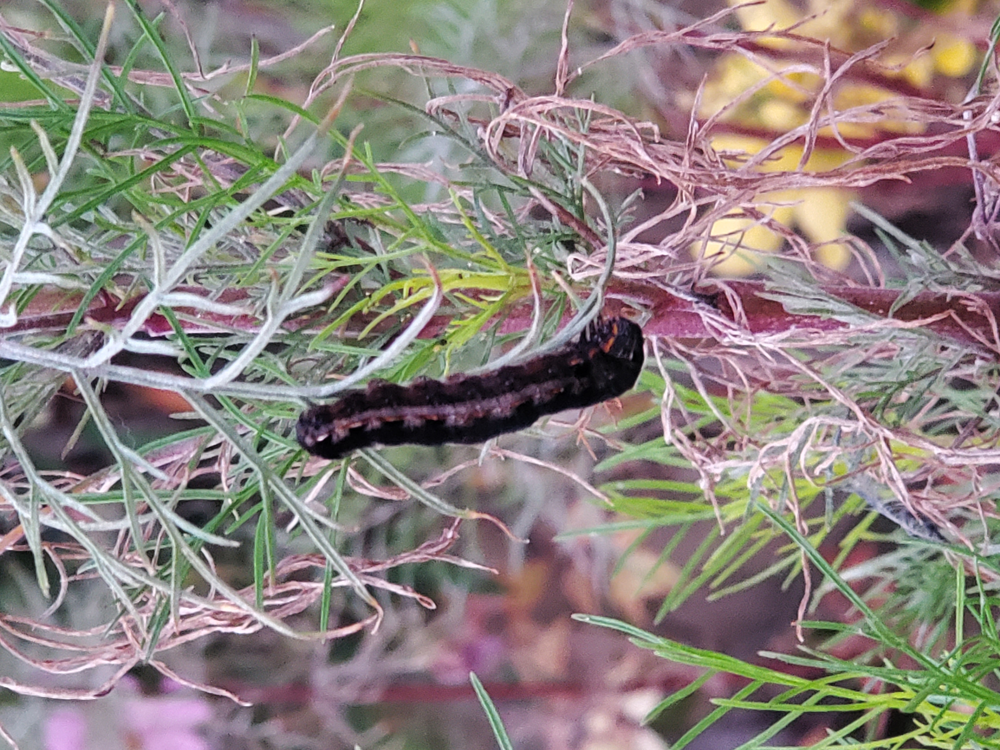
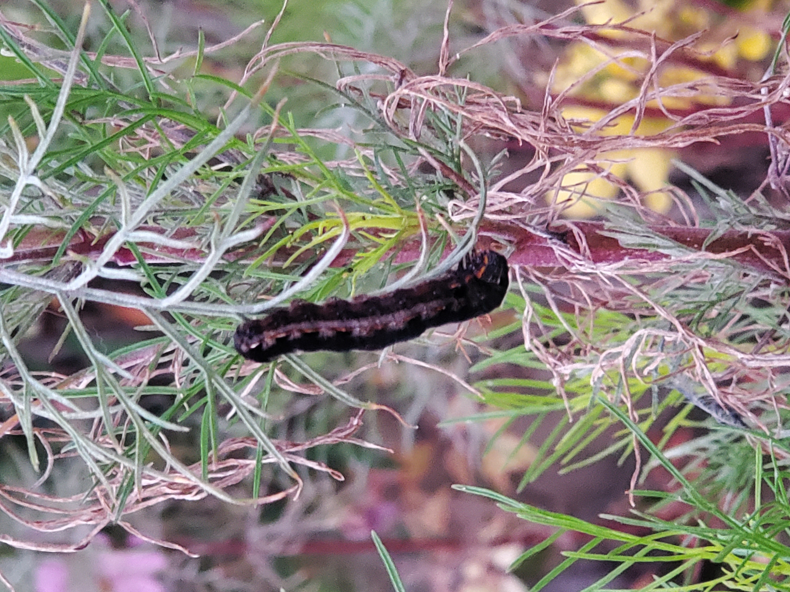
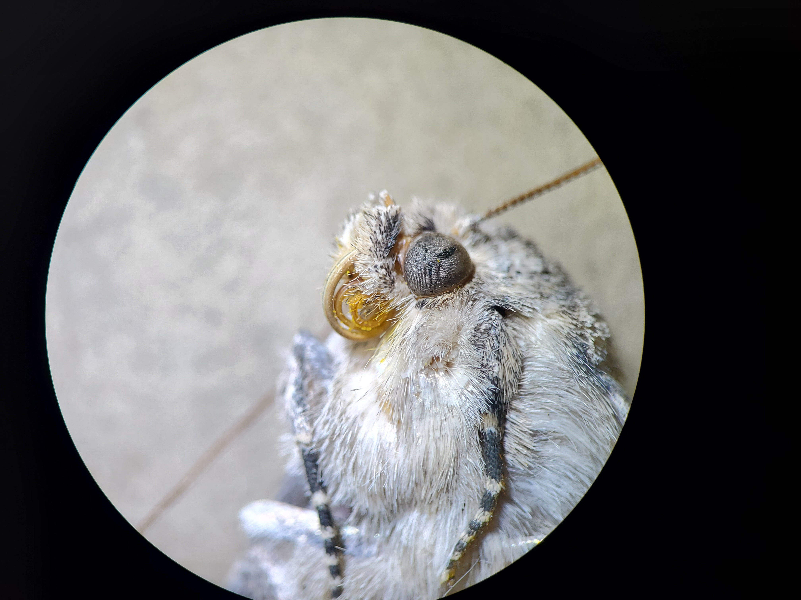
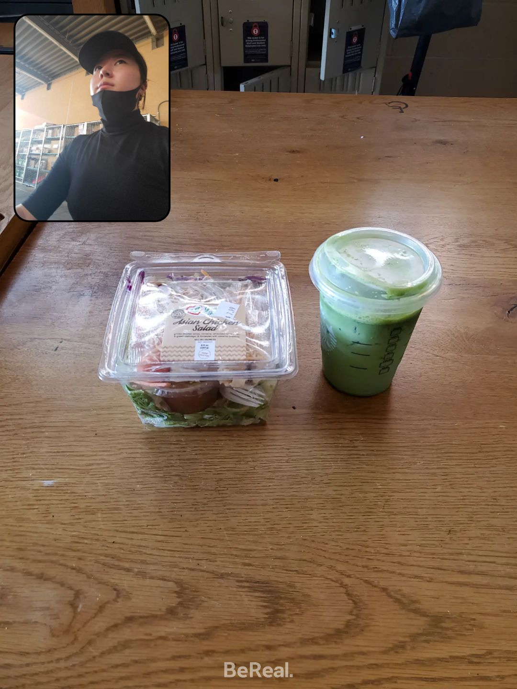
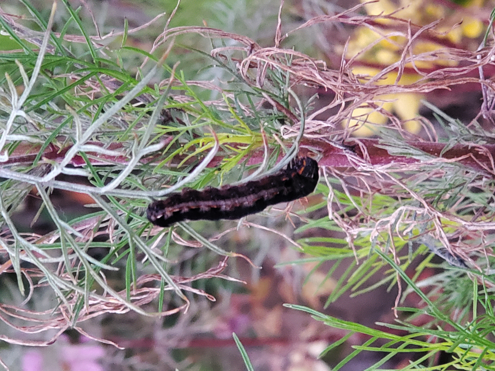
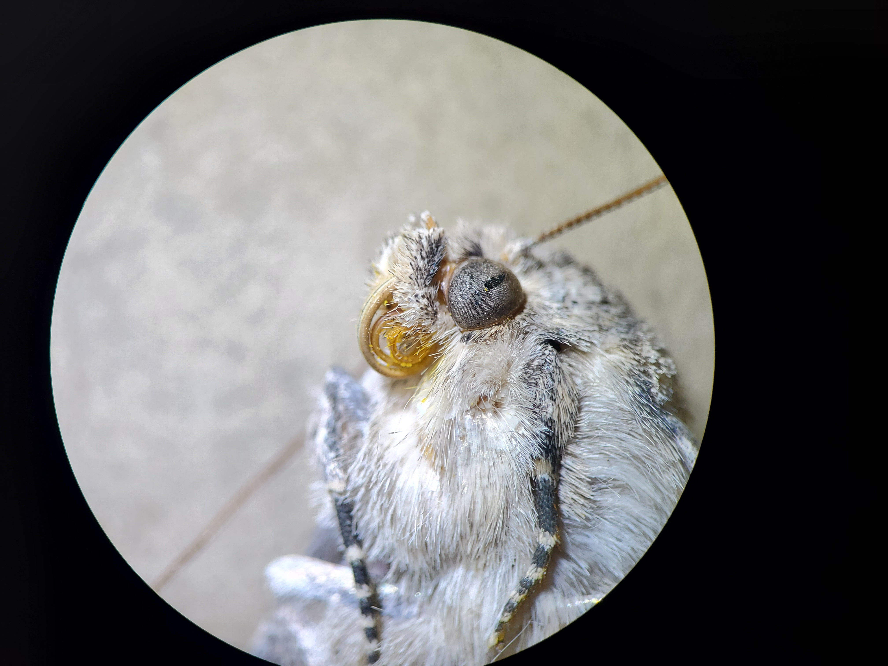
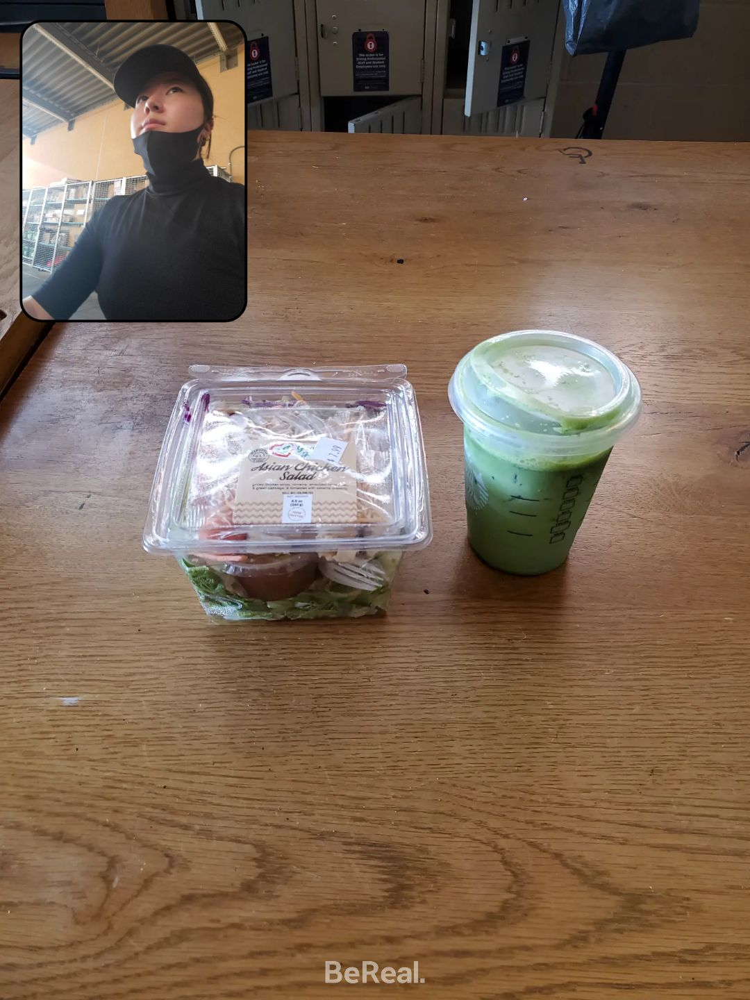

ChaeBin Kang
Women in STEM! I have always admired and dreamed to become a scientist in the future. Years have passed from my younger days and finally, the day has come for me to graduate with a proud Bachelor's Degree in Biology. I will walk the Spring Commencement as a woman in STEM that has accomplished her goals and further pursue the near future as a Pharmacist. Although many hardships proved to be obstacles, we have overcome and did our best to of our abilities and that is what matters. To be a proudful First Generation, I have done my best and I have taken all chances to pave way for my own future.
Next stop, Pharmacy Doctorate Program. Much more logic and experience is needed to become a full fledged Pharmacist. I plan to take experience seriously, and gather volunteer/shadowing hours to further understand my future career choices as a Parmacist in the work field, different from a student's perspective. Many years may pass during this process but caution takes great length and ensures uncertainties I may have.
Although my University life began with a pandemic during Quarantine days, during the 3 years of college life in UCR, so much has happened, good and bad. The hardships as a Biology major is not to be taken lightly of, but the college life on-campus has proved to be much morethan just studying. I have learned so much life skills away from family and that shows college may not be as simple and happy all year round. Whilst we may have our ups and downs, one day university life will end and evrything will be part of your fondest memories that will be told wherever you go. Make the most out of this life and give your best in this major, as studying can only last during school days.
Experience
Barista
• Customer Service
• Experienced working with many different workers, managers, shift leads
• Very experienced with teamwork, communication, timelines
Cashier
• Restock/customer head count during Covid-19 pandemic
• Customer services
• Teamwork, Communications, and data/item tracking
Research Assistant
• Ran lab research with partners in assistance for graduate student
• Handled moth species and lab protocols
• Data spreadsheet and Moth identification
• iNaturalist updating
Education
UC Riverside
American Career College
Portfolio
 



 